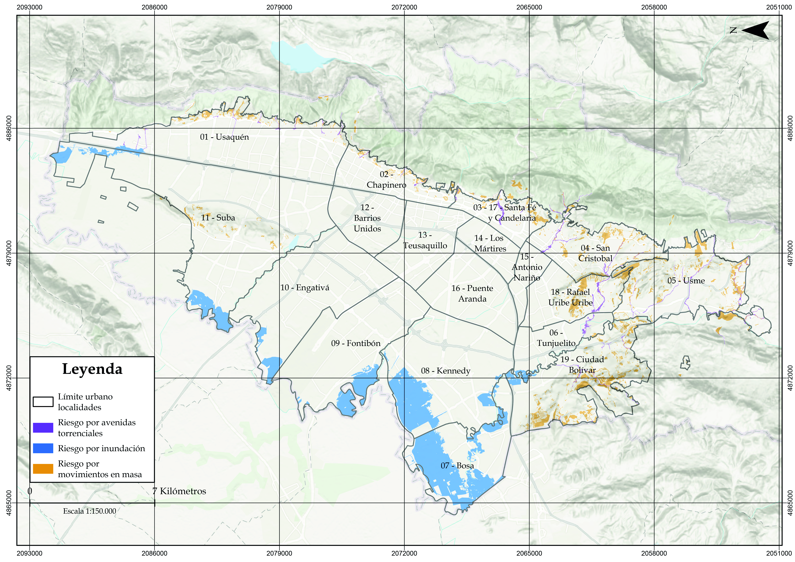

Unidad 4.3 Evolución, ordenamiento y clasificación del territorio
El ordenamiento territorial es reglamentado por un conjunto de normas para cumplir con las disposiciones que se han dado desde la Constitución Política para lograr la sostenibilidad territorial y el desarrollo humano en el territorio. El conocimiento de las características y los fenómenos físicos del territorio, así como la cultura y la identidad territorial son factores para tener en cuenta en la formulación de estas normas. La Constitución Política de Colombia establece mandatos rectores de obligatorio cumplimiento para la protección del ambiente y el uso responsable de los recursos naturales —incluido el suelo, para lo cual se utilizan los POT — para lograr la sostenibilidad territorial. El desarrollo de esos mandatos por medio de leyes, decretos, acuerdos, instituciones y políticas es de lo que trata esta Unidad al definir la Estructura Ecológica Principal de la Región Hídrica de Bogotá.
2.1. Marco jurídico de gestión ambiental y de los recursos naturales
La Corporación Autónoma Regional de Cundinamarca-CAR ejerce la función de autoridad ambiental para el departamento y las zonas rurales del Distrito Capital —pues en los demás tipos de suelo la autoridad es la Secretaría Distrital de Ambiente—, actuando de acuerdo con las normas de superior jerarquía y conforme a los criterios y directrices trazadas por el Ministerio de Ambiente y Desarrollo Sostenible. La CAR debe promover y desarrollar la participación comunitaria 1 en actividades y programas de protección ambiental, de desarrollo sostenible —o sostenibilidad territorial— y de manejo adecuado de los recursos naturales renovables.
Además, debe coordinar el proceso de preparación de los planes, programas y proyectos de desarrollo ambiental que deban formular los diferentes organismos y entidades integrantes del Sistema Nacional Ambiental-SINA en el área de su jurisdicción y en especial, asesorar a los departamentos, distritos y municipios de su comprensión territorial, en la definición de los planes de desarrollo y ordenamiento territorial, y en sus programas y proyectos en materia de protección del medio ambiente y los recursos naturales renovables, de manera que se asegure la armonía y coherencia de las políticas y acciones adoptadas por las distintas entidades territoriales.
El Ministerio de Ambiente y Desarrollo Sostenible debe reservar, alinderar y sustraer las áreas que integran el Sistema de Parques Nacionales Naturales y las reservas forestales nacionales, y reglamentar su uso y funcionamiento. Por otro lado, la CAR tiene el deber de reservar, alinderar, administrar o sustraer, en los términos y condiciones que fijen la ley y los reglamentos, los distritos de manejo integrado, los distritos de conservación de suelos, las reservas forestales y parques naturales de carácter regional, y reglamentar su uso y funcionamiento, además de administrar las Reservas Forestales Nacionales en el área de su jurisdicción.
La función pública del ordenamiento del territorio municipal o distrital se ejerce mediante la acción urbanística de las entidades distritales y municipales, como las alcaldías y secretarías de ambiente, referida a las decisiones administrativas que les son propias, relacionadas con el ordenamiento del territorio y la intervención en los usos del suelo, adoptadas mediante actos administrativos que no consolidan situaciones jurídicas de contenido particular y concreto. Las acciones urbanísticas para preservar o mitigar impactos en la calidad ambiental son:
-
Determinar espacios libres para parques y áreas verdes públicas, en proporción adecuada a las necesidades colectivas.
-
Determinar las zonas no urbanizables que presenten riesgos para la localización de asentamientos humanos, por amenazas naturales, o que de otra forma presenten condiciones insalubres para la vivienda.
-
Localizar las áreas críticas de recuperación y control para la prevención de desastres, así como las áreas con fines de conservación y recuperación paisajística.
-
Identificar y caracterizar los ecosistemas de importancia ambiental del municipio, de común acuerdo con la CAR, para su protección y manejo adecuados2 .
Por esto, la CAR emite acuerdos y resoluciones que delimitan áreas protegidas, rondas hídricas, permisos ambientales, el Plan de Ordenamiento y Manejo de Cuencas-POMCA, y el Plan de Gestión Ambiental Regional-PGAR para fijar las determinantes ambientales regionales, y a partir de allí, se puedan formular los Planes de Ordenamiento Territorial de los municipios y el Distrito Capital; y los Planes de Desarrollo.
La Ley 388 de 1997 define las determinantes ambientales, que alinderan y administran tanto la CAR como las Secretarías de Ambiente Distritales y municipales. En la elaboración y adopción de sus planes de ordenamiento territorial, los municipios y distritos deberán tener en cuenta las siguientes determinantes ambientales, que constituyen normas de superior jerarquía.
Las determinantes ambientales relacionadas con la conservación, la protección del ambiente y los ecosistemas, el ciclo del agua, los recursos naturales, la prevención de amenazas y riesgos de desastres, la gestión del cambio climático y la soberanía alimentaria son:
1. Las directrices, normas y reglamentos expedidos en ejercicio de sus respectivas facultades legales por las entidades del Sistema Nacional Ambiental 3 en los aspectos relacionados con el ordenamiento espacial del territorio, de acuerdo con la Ley 99 de 1993, y el Código de Recursos Naturales y demás normativa concordante, tales como las limitaciones derivadas del Estatuto de zonificación de uso adecuado del territorio y las regulaciones nacionales sobre uso del suelo en lo concerniente exclusivamente a sus aspectos ambientales.
2. Las disposiciones que reglamentan el uso y funcionamiento de las áreas que integran el Sistema de Parques Nacionales Naturales y las Reservas Forestales Nacionales.
3. Las regulaciones sobre conservación, preservación, uso y manejo del ambiente y de los recursos naturales renovables, en especial en los ecosistemas estratégicos; las disposiciones producidas por la CAR en cuanto a la reserva, alinderamiento, administración o sustracción de los distritos de manejo integrado, los distritos de conservación de suelos, y las reservas forestales; a la reserva, alinderamiento y administración de los parques naturales de carácter regional; las normas y directrices para el manejo de las cuencas hidrográficas expedidas por la Corporación Autónoma Regional o la autoridad ambiental de la respectiva jurisdicción, y las directrices y normas expedidas por las autoridades ambientales para la conservación de las áreas de especial importancia ecosistémica.
4. Las políticas, directrices y regulaciones sobre prevención de amenazas y riesgos de desastres, el señalamiento y localización de las áreas de riesgo para asentamientos humanos, así como las estrategias de manejo de zonas expuestas a amenazas y riesgos naturales, y las relacionadas con la gestión del cambio climático.
La creación del Sistema Nacional Ambiental promueve la regionalización de la gestión ambiental y potencializa la conservación y restauración de la biodiversidad y el patrimonio natural, sin perder el rumbo colectivo impuesto por las leyes e instituciones de carácter nacional. El entramado normativo e institucional del sector ambiente en Colombia es muy robusto y permite realizar transformaciones territoriales culturales y paisajísticas para la sostenibilidad territorial, sin embargo, estas se deben hacer por medio de la ciencia y el diálogo con las comunidades.
2.2. Región Hídrica de Bogotá
El territorio analizado en esta Sección corresponde a la Región Hídrica de Bogotá-RHB 4, un concepto-herramienta y una delimitación propuesta por Ernesto Guhl para facilitar la gestión integrada del agua, que no se agote ni se contamine, y la sostenibilidad territorial a escala regional con el marco normativo e institucional actual. Esta región supera los límites municipales tradicionales y reconoce las interconexiones ecosistémicas, hidrológicas y socioeconómicas que definen este territorio. La delimitación de la RHB se basa en tres criterios articuladores:
1. Criterio hídrico: Incluye la cuenca del río Bogotá y sus afluentes, así como otras cuencas menores que abastecen la región. Este criterio permite realizar balances hídricos y planificar su uso de manera sostenible, garantizando la seguridad hídrica.
2. Criterio ecológico: Incorpora áreas de alto valor ecosistémico, como páramos —Chingaza, Sumapaz, Guacheneque y Guerrero—, humedales, bosques nativos, rondas hídricas y zonas de recarga acuífera. Estas áreas son esenciales para la provisión de servicios ecosistémicos, la conservación de la biodiversidad, la regulación hídrica y la seguridad alimentaria.
3. Criterio político-administrativo: Integra los 52 municipios que tienen todo o parte de su territorio dentro de la cuenca, así como el Distrito Capital por las múltiples relaciones de las actividades humanas. Esto facilita la coordinación interinstitucional, la planificación conjunta y la implementación de políticas públicas con una visión supramunicipal y de largo plazo.
Se ha pasado de simplemente traer agua de donde haya —gestión por oferta— a tratar de racionalizar su uso —gestión por demanda—, y luego a un enfoque más integral que considera el agua como un bien público y económico que debe ser gestionado de manera participativa. Colombia es un país muy rico en agua gracias a su ubicación geográfica —cerca del Ecuador, con costas en dos océanos y montañas andinas que favorecen las lluvias—.
Proyecciones de oferta y demanda muestran que, aunque hay agua suficiente hasta 2050, la incertidumbre climática y la contaminación comprometen la seguridad hídrica. Si no se actúa, el agua dejará de ser apta en cantidad o calidad para el consumo en la Región Hídrica de Bogotá. Es necesario cambiar la forma de pensar y actuar: gestionar el agua de manera más colaborativa, proteger los ecosistemas que la producen —como los páramos—, no sobrepasar los límites biofísicos ni degradar las determinantes ambientales —agua e integridad ecosistémica—, y tratar las aguas residuales.
La delimitación de la Región Hídrica de Bogotá es fundamental para avanzar hacia la sostenibilidad territorial, ya que establece una unidad espacial clara para la gestión del territorio, divide la región en tres subregiones funcionales: cuenca alta para la producción y regulación hídrica, cuenca media para el consumo urbano-rural y descarga de aguas residuales contaminantes, y cuenca baja para la producción de energía mediante hidroeléctricas y recepción de contaminantes.
Además, permite articular la planificación urbana y rural con la oferta natural de recursos hídricos al facilitar la gobernanza colaborativa entre actores públicos, privados y comunitarios. También orienta y refleja las responsabilidades en el ordenamiento territorial, la inversión en infraestructura verde, tratamiento de aguas residuales y conservación de ecosistemas estratégicos. Así, contribuye a reducir conflictos socioecológicos por el uso del agua y el suelo, y promueve la equidad en la distribución de beneficios y cargas ambientales implementando la justicia ambiental.
En síntesis, la Región Hídrica de Bogotá no es solo una unidad geográfica, sino un instrumento de planificación y gestión que permite transitar hacia un modelo de gestión del agua complejo, adaptativo y territorialmente contextualizado, que reconozca el agua como eje articulador de la sostenibilidad regional.
Mapa 21. La Región Hídrica de Bogotá según la metodología utilizada por Ernesto Guhl 5
 Fuente: Elaboración Sociedad de Mejoras y Ornato de Bogotá con datos de la CAR, SINAP, SDA, Ernesto Guhl.
Fuente: Elaboración Sociedad de Mejoras y Ornato de Bogotá con datos de la CAR, SINAP, SDA, Ernesto Guhl.
2.3. Estructura Ecológica Principal y los suelos en riesgo de desastres para Bogotá y la Región
Según el Decreto 1076 de 2015, la Estructura Ecológica Principal-EEP es “el conjunto de elementos bióticos y abióticos que dan sustento a las funciones y los procesos ecológicos esenciales del territorio, cuya finalidad principal es la preservación, conservación, restauración, uso y manejo sostenible de los recursos naturales renovables, los cuales brindan la capacidad de soporte para el desarrollo socioeconómico de las poblaciones”.
La EEP permite mantener la calidad ambiental en todas sus dimensiones gracias a que ayuda a delimitar las zonas de importancia ecológica que le brindan la funcionalidad a los ecosistemas por medio de la biodiversidad y los servicios ecosistémicos que los caracteriza, por lo que su protección contra usos diferentes a la conservación y restauración previene los conflictos socioecológicos y es una herramienta para aplicar y priorizar intervenciones para la calidad y la justicia ambiental en donde se requiera.
Con la EEP protegida y restaurada, se tiene una ciudad urbana y rural con aire más limpio, menos calor, con agua garantizada, donde las quebradas son corredores de vida y no tubos de concreto, y donde la gente puede caminar, apreciar la biodiversidad y recrearse en espacios verdes conectados. Esta es una ciudad más resiliente y saludable.
Por otro lado, con la EEP fragmentada y degradada, se tiene una ciudad que depende de costosa infraestructura gris para drenar y tratar el agua, que se inunda con cada aguacero, que sufre olas de calor, con altos niveles de contaminación del aire y donde la naturaleza está arrinconada y desconectada. Es una ciudad vulnerable, enferma y con altos costos de salud, mantenimiento de la infraestructura y reparación de desastres.
La EEP limpia y produce el aire que se respira, conserva el agua que recorre la ciudad y que se consume, mantiene el parque donde se descansa, embellece las montañas y los árboles que se ven por la ventana y dan tranquilidad, protege el humedal que alberga muchas especies de aves, y su mantenimiento evita riesgos para las comunidades. La EEP brinda funciones fundamentales para el metabolismo de la ciudad.
A continuación, se presenta la Estructura Ecológica Principal de Bogotá y Cundinamarca vigente según la Secretaría Distrital de Ambiente, el Plan de Gestión Ambiental Regional —PGAR 2024-2036—, así como la de la Región Hídrica de Bogotá. La información técnica producida por la CAR debe ser incluida en los Planes de Ordenamiento por las autoridades municipales y distritales para construir la Estructura Ecológica Principal de la región, el municipio o el distrito.
Mapa 22. Estructura Ecológica Principal de Bogotá y de Cundinamarca 6
 Estructura Ecológica Principal de Cundinamarca según Plan de Gestión Ambiental Regional de la CAR.
Estructura Ecológica Principal de Cundinamarca según Plan de Gestión Ambiental Regional de la CAR.
Fuente: Elaboración Sociedad de Mejoras y Ornato de Bogotá con información de la CAR.
Mapa 23. Estructura Ecológica Principal de la Región Hídrica de Bogotá 7
 Fuente: Elaboración Sociedad de Mejoras y Ornato de Bogotá con información de SDA.
Fuente: Elaboración Sociedad de Mejoras y Ornato de Bogotá con información de SDA.
Por otro lado, los suelos en condición de riesgo por desastres tienen que ver con la identificación de zonas propensas a las avenidas torrenciales, las inundaciones, los deslizamientos y los incendios forestales. Estos riesgos se miden teniendo en cuenta la vulnerabilidad de las poblaciones a sufrir los efectos de las diferentes amenazas que ocurren debido a las lluvias, sequías y el estado del suelo, o los eventos climáticos o biofísicos que generen daños.
Los suelos en condición de riesgo de desastres, de acuerdo con lo establecido en el Plan de Ordenamiento y Manejo de la Cuenca del río Bogotá (2019), deben ser revisados por los municipios a escala municipal, e incorporados en los Planes de Ordenamiento con el fin de evitar conflictos socioecológicos.
Mapa 24. Suelos en condición de amenaza por desastres 8
 Según el Plan de Ordenamiento y Manejo de la Cuenca del Río Bogotá y Sumapaz de la CAR.
Según el Plan de Ordenamiento y Manejo de la Cuenca del Río Bogotá y Sumapaz de la CAR.
Fuente: Elaboración Sociedad de Mejoras y Ornato de Bogotá con información de la CAR.
Mapa 25. Zonas de riesgo según el Decreto 555 de 2021

Fuente: Elaboración Sociedad de Mejoras y Ornato de Bogotá con información de la SDP.Las obras civiles como taludes, diques, muros de contención o embalses construidos para mitigar los riesgos por desastres naturales son intervenciones con una vida útil limitada. En vez de construir a pesar de la naturaleza, se deberían comprender las características y dinámicas del componente natural y ordenar el territorio según estas características, para potenciar la calidad ambiental y evitar mayores conflictos socioecológicos e injusticias ambientales. La auditoría implacable sobre la sostenibilidad o insostenibilidad del modelo de crecimiento de la huella urbana en el territorio es la naturaleza misma y, particularmente, el agua, unas veces por exceso y otras por escasez.
Sección 4.3.3 Evolución de la ocupación del territorio Sección 5.1.2 Sistema de Servicios Públicos Sección 5.1.3 Sistema de espacio público
Footnotes
-
Gustavo Wilches-Chaux. Guía para la promoción y desarrollo de procesos participativos de gestión ambiental en el territorio CAR (Bogotá: Corporación Autónoma Regional de Cundinamarca, 2012). ↩
-
Ley 388 de 1997: artículo 8 Acción urbanística. ↩
-
“Lineamientos de protección ambiental para la Sabana de Bogotá: ¿Un proyecto fallido?”, Luz Marina Rincón, La razón pública, 16 de marzo 2025. ↩
-
Ernesto Guhl Nannetti. La región hídrica de Bogotá (Bogotá: Revista de la Academia Colombiana de Ciencias exactas, físicas y naturales, 2013), 327–341. ↩
-
Consúltelo de manera interactiva en: DATACIVILIDAD ↩
-
Consúltelo de manera interactiva en: DATACIVILIDAD ↩
-
Consulte la EEP de Bogotá de manera interactiva en DATACIVILIDAD ↩
-
Consúltelo de manera interactiva en: DATACIVILIDAD ↩